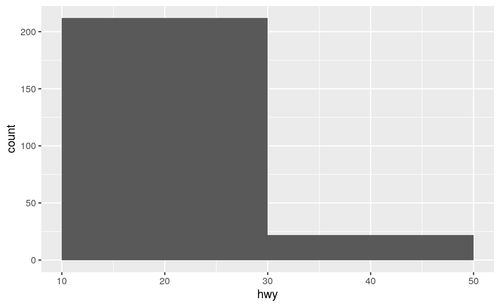
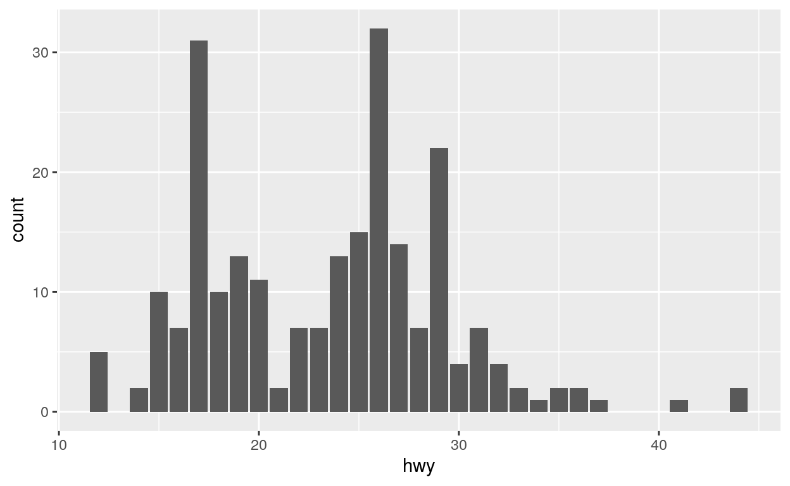

p1<-ggplot(data = mpg) +
geom_point(mapping = aes(x = displ, y = hwy,color=class))+
xlab("Engine displacement (displ)")+
ylab("Highway miles per gallon (hwy)")+
ggtitle("Highway miles per gallon (hwy) vs Engine displacement (displ)")
p1library(ggplot2)
library(digest)
plot<-ggplot(data = mpg) +
geom_point(mapping = aes(x = displ, y = hwy,shape=class))+
xlab("Engine displacement (displ)")+
ylab("Highway miles per gallon (hwy)")+
ggtitle("Highway miles per gallon (hwy) vs Engine displacement (displ)")
plot2<-ggplot(data = mpg) +
geom_histogram(aes(x=hwy),binwidth = 20) #,bins=10)
plot2
plot3<-ggplot(data = mpg) +
geom_bar(aes(x=hwy)) #,bins=10)
plot3
c(class(plot2$layers[[1]]$geom))## [1] "GeomBar" "GeomRect" "Geom" "ggproto" "gg"c(class(plot3$layers[[1]]$geom))## [1] "GeomBar" "GeomRect" "Geom" "ggproto" "gg"binwidth=plot2$layers[[1]]$computed_stat_params$binwidth
bins=plot2$layers[[1]]$computed_stat_params$bins
binwidth## [1] 20#ggplot_build(p)
#ggplot_build(p)$layout$panel_params[[1]]$x.labels
properties <- c(plot$layers[[1]]$mapping, plot$mapping)
rlang::get_expr(properties$shape)## classout<-check_plot(plot,x="displ",geom_type="GeomPoint"
,xlabel="Engine displacement (displ)"
,ylabel="Highway miles per gallon (hwy)",data_digest=digest(mpg))## [1] "(3)"plot2<-ggplot(data = mpg) +
geom_histogram(aes(x=hwy),binwidth = 5) #,bins=10)
actual_binwidth = plot2$layers[[1]]$computed_stat_params$binwidth
actual_binwidth## NULLplot2$layers[[1]]$computed_stat_params$binwidth## NULLout3<-check_plot(plot2, geom_type="GeomBar", binwidth=5,data_digest=digest(mpg))## [1] "(3)"out3$is_pass## [1] FALSEcat(out3$error_msg, sep = '\n')## The Binwidth parameter is missing.mpgWhat is 1+1?
22section 2 details